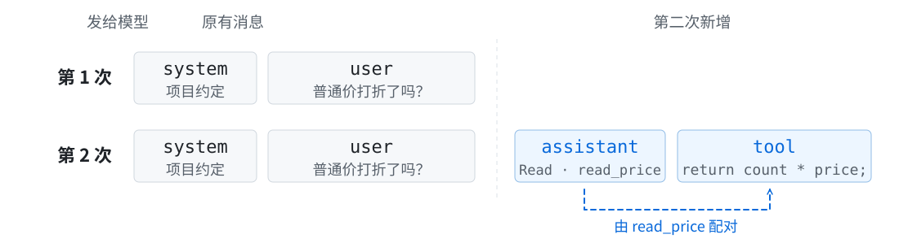
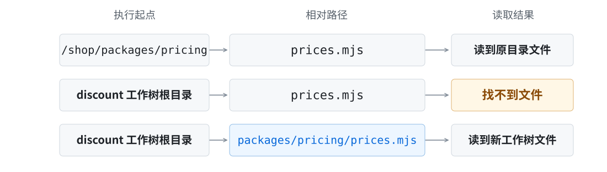
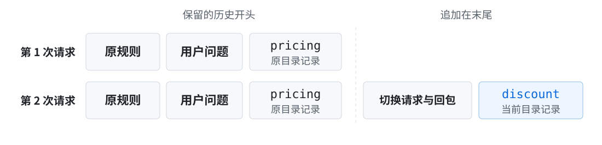

模型这次看到了什么
上一章问了一次“普通价打折了吗？”，程序却问了模型两次。第一次，终端显示“我先看一下价格文件”。第二次，它答“普通价按原价算”。把两次请求摆在一起，模型是从哪条消息里看到价格公式的？
同一次查价，两次请求
先看第一次。程序把工作约定写进 system，把你的问题放进 user。约定让模型知道该找哪个文件，另外附上的工具清单告诉它，Read 要接收一个 path，也就是文件路径。现在模型有问题、有规则，也知道怎么请程序读文件，手上还没有价格公式。

第二次，历史多了一条 assistant 和一条 tool。前一条记录模型提出的 Read({"path":"prices.mjs"})，后一条才是程序从文件里读回的原文。模型正是从这里看到公式，才有依据说普通价按原价算。假设读取的编号是 read_price，回包就用 tool_call_id="read_price" 指回那次调用。把两件、每件 100 元代入回包里的 return count * price;，得到 200 元。若遮住原问题，单凭乘法看不出你当时问的是普通价还是会员价。图只画这几条，实际请求也带着程序记下的当前目录。
opts["messages"] = copy.deepcopy(session.messages)
opts["tools"] = api_tools() if api_tools is not None else registry.toApiTools()这两行把历史和可用工具分别放进 messages 和 tools。删掉本次清单上的 Read，已经读到的公式仍留在历史里。第一次请求即使带着 Read 的参数说明，也得等程序打开文件，历史才会多出那行乘法。项目约定给了查找方向，工具说明给了参数格式，指定的文件能不能打开还要经过本地路径与权限检查。若存走 Responses 接口时，会把这一对记录转成 input 里的调用和输出，仍用同一个 call_id 关联。
loop.py · 组装本次请求 · loop.py · 把工具结果接回历史 · responses.py · 转成 Responses 输入
如果模型说“改好了”，最新一次读取却还带回乘法，而订单预览给出了 180 元，接下来该查哪里？
展开参考回答
先代入两件、每件 100 元。这次读到的普通价函数仍会算出 200 元。预览的 180 元要沿它自己的调用往下查，看看用了哪一个函数，以及结果出来后有没有再乘折扣。模型说“改好了”只记录了它的结论。
刚改的约定，为什么模型还看着旧版？
查完价，你在 RUOCUN.md 里加一句“改后检查订单预览”，再切换界面语言。若存会在下一回合开始时重建第一条 system，但你去下一次请求里找，那里还是原来的工作约定。要解释为什么少了刚加的那一句，先查新消息拿的是哪一次读到的文件。
project_text = "" if args.no_project_instructions else loadProjectInstructions(cwd, userRoot=user_root)
def system_prompt(selected_model: str) -> str:
text = buildSystemPrompt({
"modelId": selected_model, "toolSummaries": tool_summaries,
"platform": sys.platform, "interactive": not bool(args.prompt),
"projectInstructions": project_text, "memories": memory_text,
})loadProjectInstructions(...) 在启动时就把项目约定读成了字符串。之后每次调用 system_prompt(...)，它都取外层已有的 project_text。这个函数能换模型名，也能重拼提示，但读文件发生在它外面。保存在内存里的那份文本还只有旧的计价约定。
runtime.py · 读入约定与启动记忆 · runtime.py · 拼入项目约定和技能目录 · runtime.py · 插入启动钩子的补充说明
prompt = system_prompt(session.model)
messages = [{"role": "system", "content": prompt}, *history[1:]]
await conversation.replace_context(session, messages, reset_prompt=False)模板把工作规则、工具摘要和启动时选好的记忆正文或索引拼在一起。能力说明补足当前边界，技能、子代理目录留出找流程或帮手的入口。history[1:] 接回原先的消息，启动 Hook 如有补充也留在后续历史里。新进程打开旧会话时也会重建首条消息，切换模型时会用目标模型重新装配。规则和启动记忆取的是本进程已读的数据，技能目录可以采用确认更新后的清单。
要核对一条规则有没有生效，我会先找它在请求里的原话。要是每次发请求都重读文件，刚保存的版本会及时进来，可同一项工作跑到一半也可能换了约定。若存把规则读入的时机放在启动时，想让新文字进当前会话，可以明确读一次改后的文件，再看工具回包。要让它成为新会话的起始约定，就重新启动，让加载器从磁盘读入。
切进工作树，文件名没变，起点变了
接着请程序开一个 discount 工作树。规则还是启动时那份，目录却会在发出下一次请求前更新。假设 prices.mjs 已经提交，从 /shop/packages/pricing 启动时，短文件名能直达它。切换成功后，工具从新工作树根目录出发。照抄短文件名会在 discount 根下找文件，价格文件却还在两层子目录下。把 path 补成 packages/pricing/prices.mjs 才会指到新工作树里的价格文件。

工作树工具成功时，把 worktree.root 写进工具上下文的 ctx.cwd，原工作区仍记在 workspaceRoot 里。文件工具马上从新目录解析相对路径。上一份请求里的目录还是 pricing。程序怎样在下一次请求里把新目录告诉模型？
await self._ensureRuntimeContext()
current = cast(StreamChatOptions, {**options, "messages": copy.deepcopy(self.session.messages)})_ensureRuntimeContext() 从 ctx.cwd 取出 discount 工作树的路径，和历史里最近的目录记录相比。上一条还是 pricing，于是追加一条新记录。第一次发请求没有旧记录，也会补一条。目录相同就沿用最近的记录。
「先补目录，再复制请求要用的历史。」 这里假设程序就用这份副本构建请求，中间未压缩历史。要是对调两行，discount 仍会写进会话，但发出去的副本已经截在追加之前，最后一条标准目录记录还是 pricing。工具切换成功的回包依然在，工具也已从新工作树执行。落后一步的是那份给模型看的目录记录。
context_runtime.py · 发请求前检查当前目录 · runtime_context.py · 生成并比较目录记录
切换成功后，按这个顺序取历史，原规则和旧目录还在，新目录已经接在末尾。模型现在该按 discount 找相对路径。这样既交代了新地点，也保住了服务端可能复用的请求开头。已有的回归测试切换工具的工作目录，断言原消息逐条保留，只在末尾多一条新目录记录。目录没变时，再准备一次请求也不会重复追加。目录变化与重复准备请求的断言
工具组处理完后，进度提醒或反思建议也可能作为 system 接在尾部。遇到这种记录，要看是哪个环节插入的，再判断它和启动 Hook、目录快照各自何时更新。

目录记录虽然也用 role=user，里面却是程序填的 workspace_root 和 cwd，由 <ruocun-runtime-context> 标明用途。模型用它挑相对路径。工具执行时直接读 ctx.cwd。如果模型按旧目录填了路径，我会对照发出去的目录记录和工具执行时的目录，看看是模型晚看到一步，还是执行起点就没切过去。
如果只在 Bash 子进程里执行 cd ../reports，同一次 Shell 的后续命令会用 reports。单独发出的 Read 仍按 ctx.cwd 找文件。只有成功切换会话目录之后，下一次文件工具和新起 Shell 才会一起使用新位置。
exec_shell.py · 给本次 Shell 选择起始目录 · enter_worktree.py · 写入新的会话工作目录
仓库里有好几份约定，程序读哪几份？
切进 discount，程序补的是当前目录。等普通价算出 180 元，模型为什么还该核对会员价？“两种价格都要查”来自工作树切换前就已读入的项目约定。这句话放在第一条系统消息里，模型安排检查时就能用到。想查是哪份文件给了它这条要求，得回到启动的位置。
许多仓库用 AGENTS.md 写工作约定。若存命令行默认沿启动路径找的是 RUOCUN.md 和 RUOCUN.local.md。从 /shop/packages/pricing 启动，隔壁 reports 的规则会进这份提示吗？
/shop/
├── .git/
├── RUOCUN.md
└── packages/
├── pricing/
│ ├── RUOCUN.md
│ └── prices.mjs
└── reports/
└── RUOCUN.md/shop/RUOCUN.md
价格行为变更后，分别检查普通价与会员价。
/shop/packages/pricing/RUOCUN.md
折扣只用于普通价，会员价保持原样。
程序先取用户配置目录里的 RUOCUN.md，再沿 pricing 的祖先找到有 .git 的 /shop，按 /shop、packages、pricing 的顺序读。每层先试 RUOCUN.md，再试 RUOCUN.local.md。所以根目录和计价模块的约定都在，旁支 reports 的约定进不来。不存在或读不到的文件会跳过。找不到 Git 根时，项目级规则只从启动目录取。
假如 pricing 复制了根目录那份说明，只在最后补一句“会员价保持原样”，那么“检查两种价格”会出现两次。加载器用 content not in seen 比的是清理过的整份文本。整份一样才略过后一份。多一句的版本会整份带进来，相反的两条约定也会一并留下。
换成从 /shop 启动，再去读 packages/pricing/prices.mjs。按 Claude Code 的官方文档，若该子目录的 CLAUDE.md 适用，第一次读到这里的代码会把它带进来。若存启动时走的是另一条路径，当时只查到 /shop。想让模型在当前会话看到计价模块那条约定，就让它再读 packages/pricing/RUOCUN.md，去那次工具回包里找。 Claude Code 官方文档 · 项目说明何时加载
这一章带走什么
- 工具清单教模型怎么开口读文件。要查它看过哪份价格公式，就翻下一次模型请求里的
Read回包。 - 系统提示重拼了，里面还是启动时读到的那份规则。想在当前会话用上刚写进文件的预览要求，可以让程序重读，再去回包里找那句话。
- 换了工作树，同一个相对路径会从新目录找。要让模型在下一次请求里看到工具用的目录，程序得先补新目录，再复制历史。
假如模型认出了 Read，却把 path 写成 file，程序在哪一步发现写错了？
面经自测
Agent 循环里传给模型的消息分哪几类？
字节跳动 · 一面 · 面经原帖 · 题意转述
展开参考回答
我先看是谁在什么环节留下了这条消息。system 提供工作约定，用户的 user 消息交代目标，assistant 记模型的回答或工具请求，tool 带回执行结果。若存也用带专门标记的 user 消息传运行目录。程序还单独附上这一轮可用的工具说明。
第一次查普通价，请求里有规则、我的问题和可用的工具说明，还看不见价格公式。等程序把读取请求和实际读到的公式都带回来，模型才有证据判断有没有打折。
运行时怎样处理 AGENTS.md 这类项目说明？
快手 · 一面 · 面经原帖 · 题意转述
展开参考回答
先看程序实际读取哪种文件、从哪里找。若存默认先取用户约定，再沿 Git 根到启动目录读取各层存在的原生规则文件。会话里重建系统消息会沿用当时读到的材料，磁盘上的新内容要重新读入。
新的模型请求需要带上用户之前说过的话吗？
阿里云 · 一面 · 面经原帖 · 题意转述
展开参考回答
要。这个查价例子里，程序把原问题和刚读到的公式一起带上。查价时若只送工具读回的公式，却没带用户问的是哪种价格，模型就缺了判断目标。
在 Bash 里执行了一次 cd，下次 Read 会从那个目录开始吗？
若存设计题
展开参考回答
刚改完项目规则，重建第一条系统消息，为什么还读到旧要求？
若存设计题
展开参考回答
根目录和子目录都有项目说明，若存怎样处理相同的规则？
若存设计题
展开参考回答
为什么要把项目里的开发规范随请求一起发给模型？
启云方 · 一面 · 面经原帖 · 题意转述
展开参考回答
让模型在选动作之前就知道这个项目要求守什么约定。比如普通价打折后同时核对会员价，这条要求可以从项目说明带进请求。